Transbay Transit Center Roof Garden
A 5.4-acre public park suspended above a transit centre.환승센터 위에 떠 있는 5.4에이커 공원.
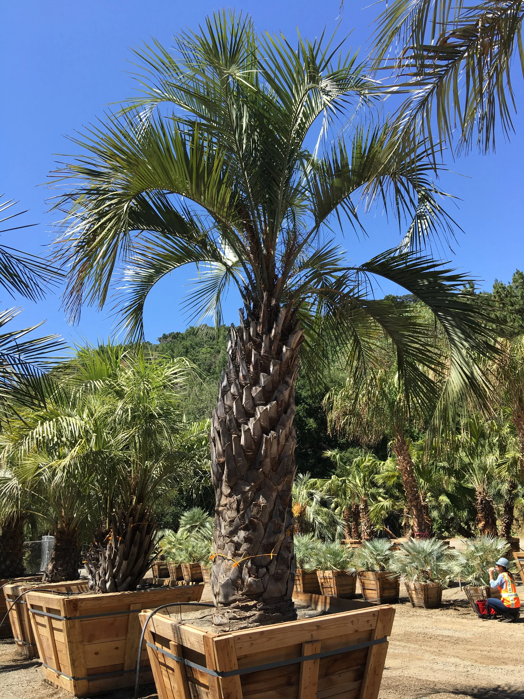
- Client
- PWP Landscape Architecture
- Location
- San Francisco, California
- Year
- 2016
- Role
- Summer Intern, Landscape Architect
- Scope
- Renderings, palm garden planning, tree selection
The brief. A 5.4-acre public park suspended above the Transbay Transit Center in San Francisco A PWP Landscape Architecture project.
The idea. A long, narrow roof shaped as a sequence of active and passive zones, with mounded landscape at the ends and flat areas at the centre.
What I did. As a summer intern: rendering production, planning for the palm garden, and tree selection.
과제. 샌프란시스코 트랜스베이 환승센터 위에 떠 있는 5.4에이커 공공 공원. PWP 조경사무소의 프로젝트입니다.
아이디어. 길고 좁은 지붕을 활동 공간과 휴식 공간이 번갈아 이어지도록 구성하고, 양 끝은 둔덕 지형, 가운데는 평지로 계획했습니다.
역할. 여름 인턴으로 렌더링 제작, 팔밍가든 계획, 수종 선정을 맡았습니다.
Plan계획
Topography, program and access지형, 프로그램, 동선
Active and passive zones, mounded and flat ground, and the access points along the roof.활동·휴식 구역, 둔덕과 평지, 그리고 지붕 위 진입 지점.
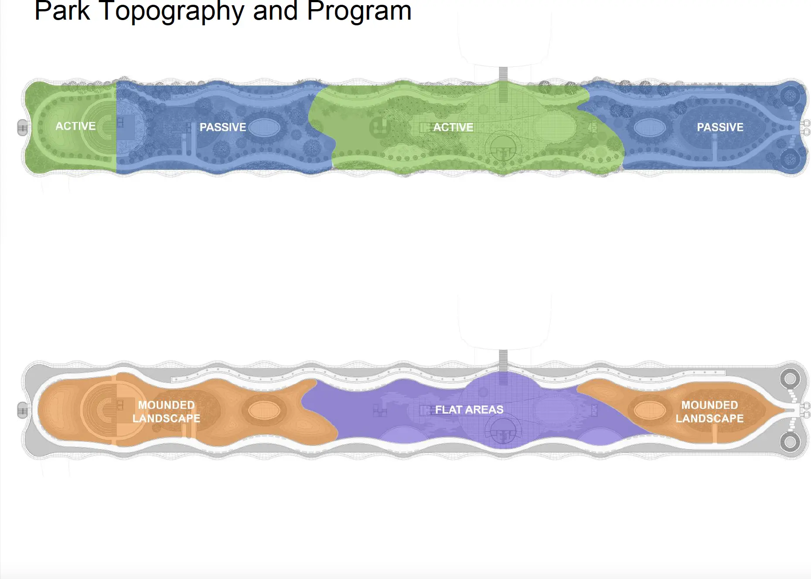
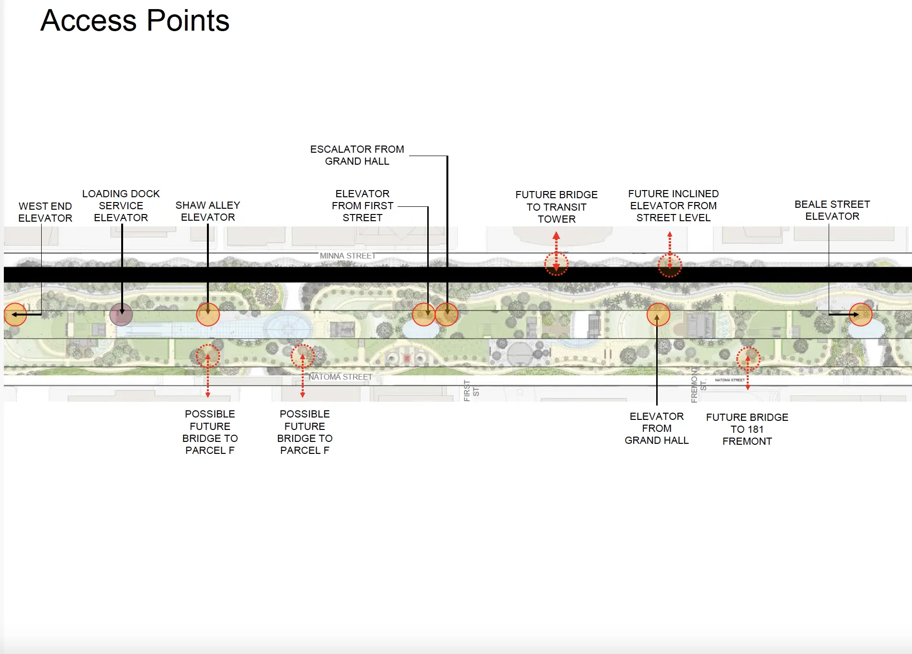
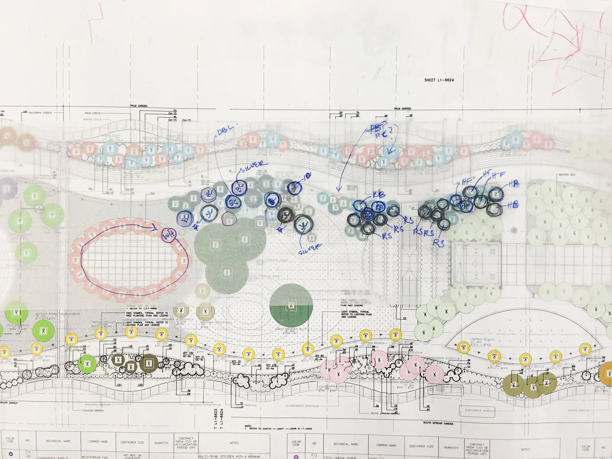
Rendering렌더링
A park above the street거리 위의 공원
Renderings of the garden from above and at eye level.위에서, 그리고 눈높이에서 본 공원 렌더링.
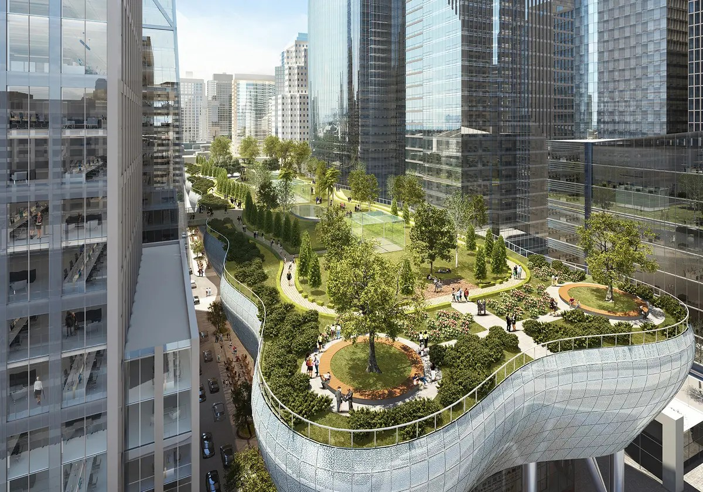
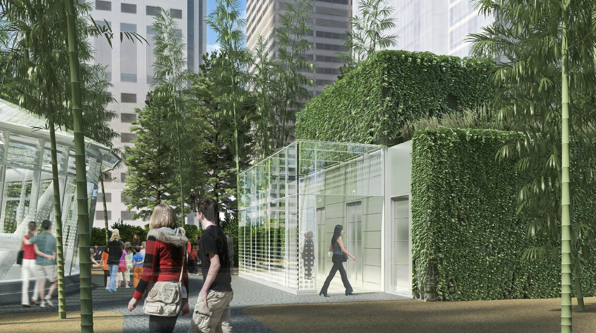
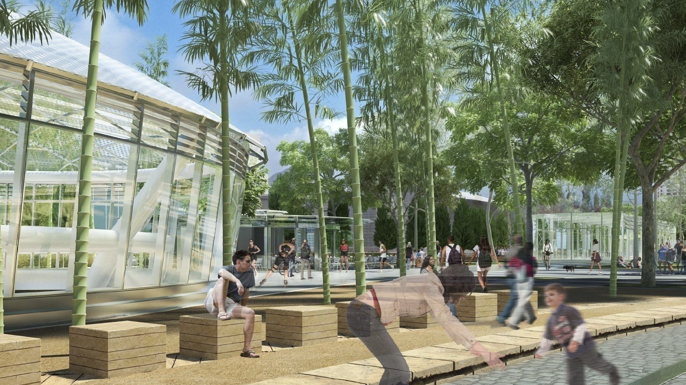
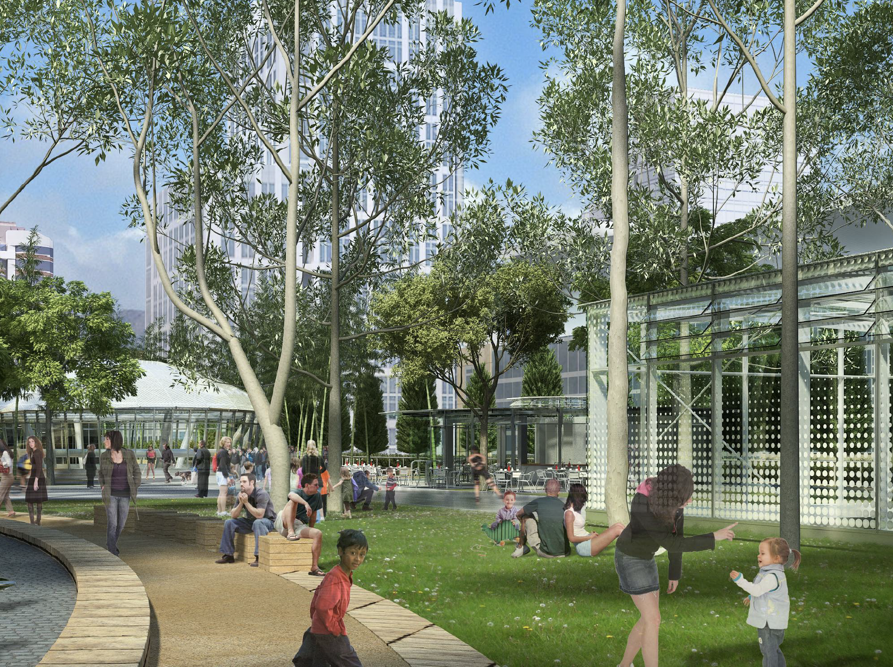
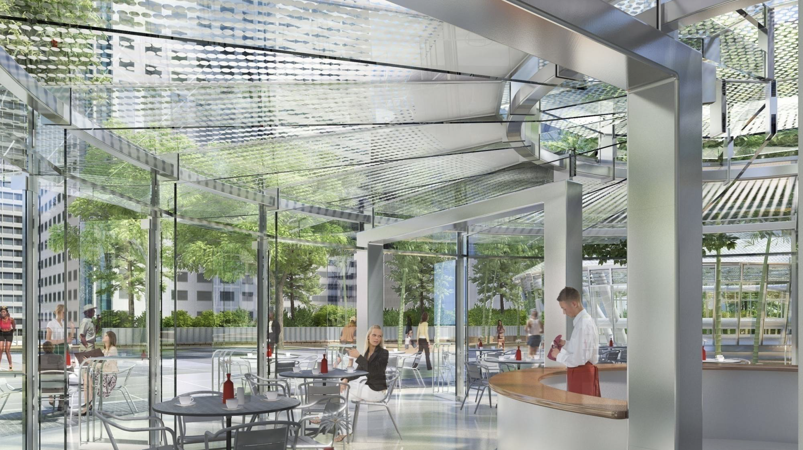
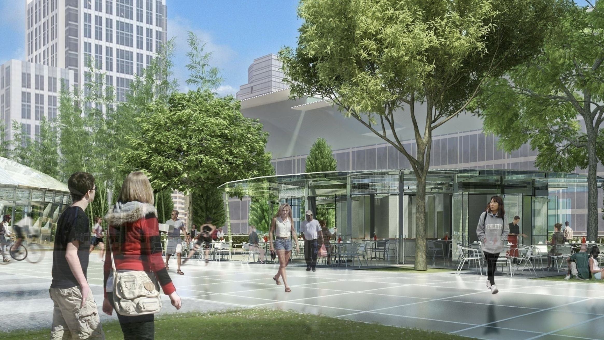
Planting식재
Choosing the palms야자수 고르기
Palm species studies for the palm garden, and tagging selected trees at the nursery.팔밍가든을 위한 야자수 수종 검토, 그리고 농장에서 고른 나무에 태그 달기.
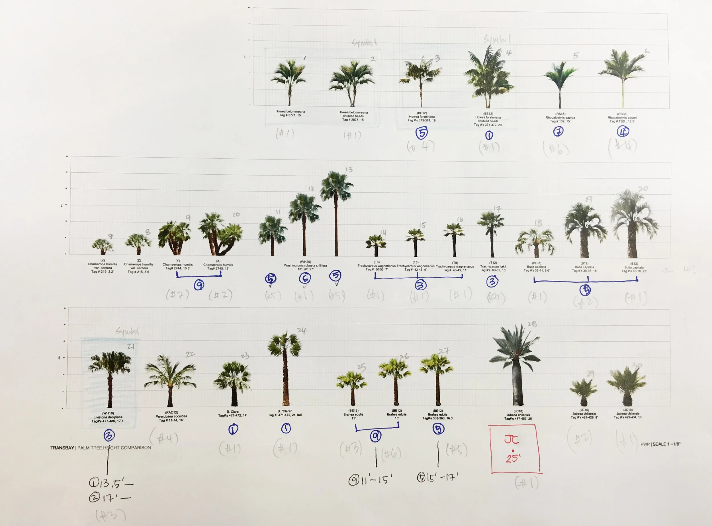
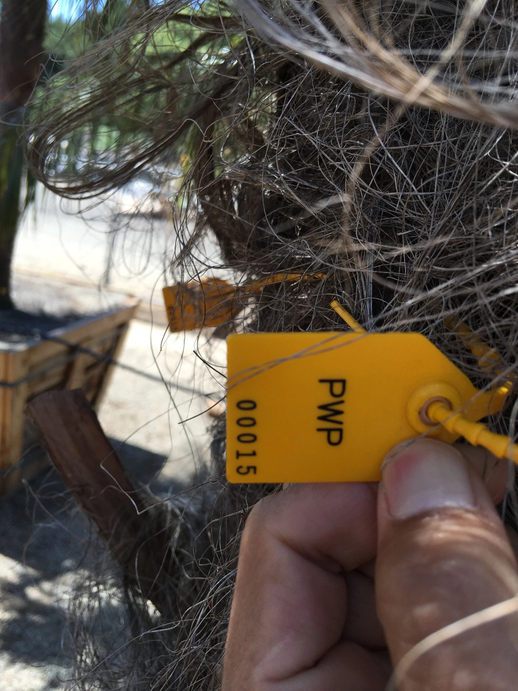
Construction시공
Taking shape모습을 갖추다
The roof under construction, with the palms in place.야자수가 자리 잡은 공사 중의 지붕 공원.
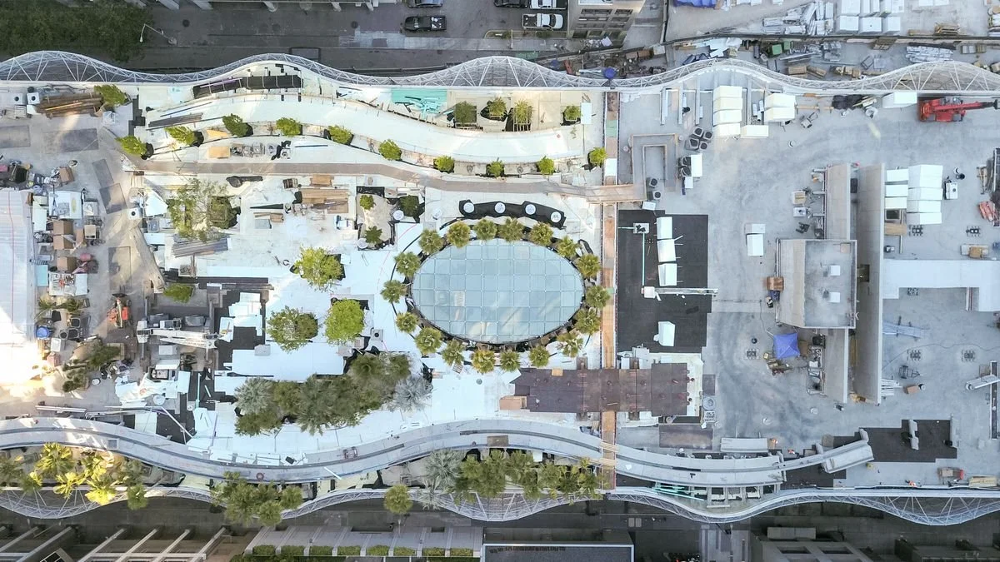